4
Backbones evaluated
ICML 2026 Accepted · Inference-Time Specialization
A scenario-level pruning framework that couples representation subspaces in embedding space with sparse executable pathways in parameter space.
Moderate pruning on Qwen2.5-14B reaches 47.8 / 44.1 / 31.3 Recall (Selected/OOD/Cross) versus dense 40.9 / 37.2 / 22.8, while online compilation remains within 0.027-0.068s.
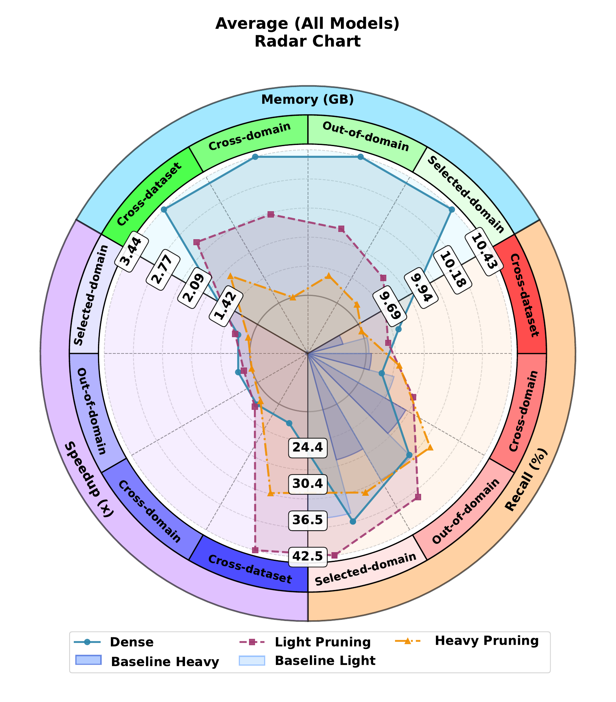
Backbones evaluated
Dataset splits/tests
Qwen2.5-14B Recall (moderate vs dense)
Speedup range across four backbones
Online compilation time range
We study practical inference-time specialization: given a frozen LLM and a deployment scenario, compile a reusable budget-bounded subnetwork without scenario-specific supervised training.
The core hypothesis is subspace-pathway coupling: inputs aligned in similar representation subspaces tend to activate sparse and consistent head-level pathways. SubspacePath operationalizes this with two modules: Domain-Basis Synthesis (DBS) and Probe-based Scenario Pruning (PSP).
Across XDomainBench splits and cross-dataset benchmarks (CommonsenseQA, Natural Questions, ARC), SubspacePath improves robustness-efficiency trade-offs under moderate and aggressive pruning.
Global static pruning criteria often fail under scenario shifts, while router-heavy approaches add runtime complexity. We need pruning that is specialized, interpretable, and deployment-friendly.
Embedding-level domain axes can act as stable coordinates, and probe signals can map those coordinates to executable head pathways. This turns pruning from generic compression into scenario-conditioned compilation.
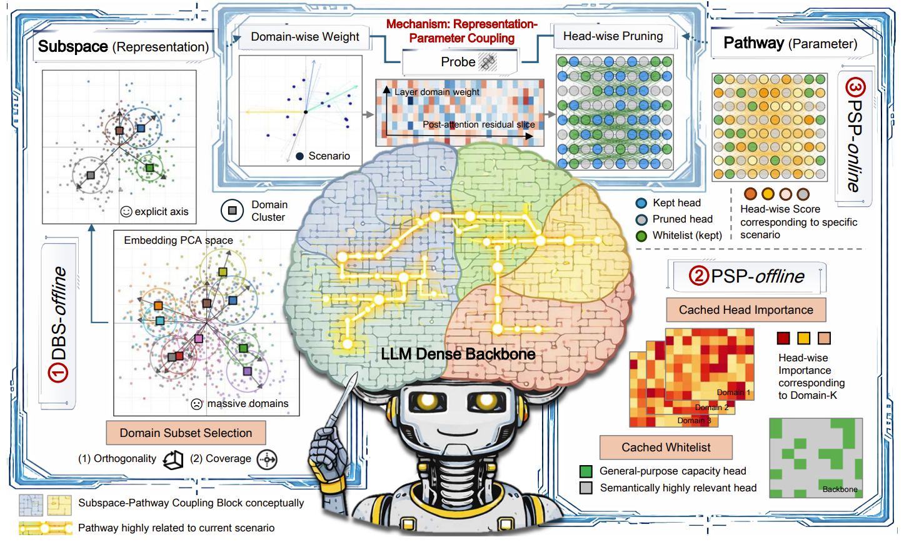
Gains are strongest in OOD and cross-domain settings because scenario-conditioned masks reduce pathway interference. The effect comes from better pathway organization, not only parameter removal.
SubspacePath separates work into an offline preparation stage and a lightweight online compilation stage. The online stage uses only scenario-start input and does not run optimization.
Construct domain pools, synthesize DBS axes, and train PSP probes on input-only data.
Output: reusable semantic basis + probe toolkit + cached head importance.
Read scenario-start input, infer domain mixture, combine with cached importance, and compile budgeted head mask.
Output: one scenario-level executable mask (`m_s`) with whitelist preserved.
Reuse the compiled mask for subsequent turns to avoid repeated optimization and keep per-turn overhead low.
Result: stable, efficient specialization for coherent multi-turn scenarios.
Images are supporting evidence; method logic is primary. Click each button to reveal the corresponding figure block.
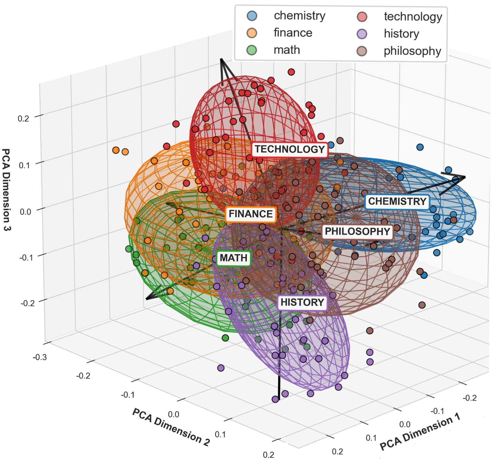
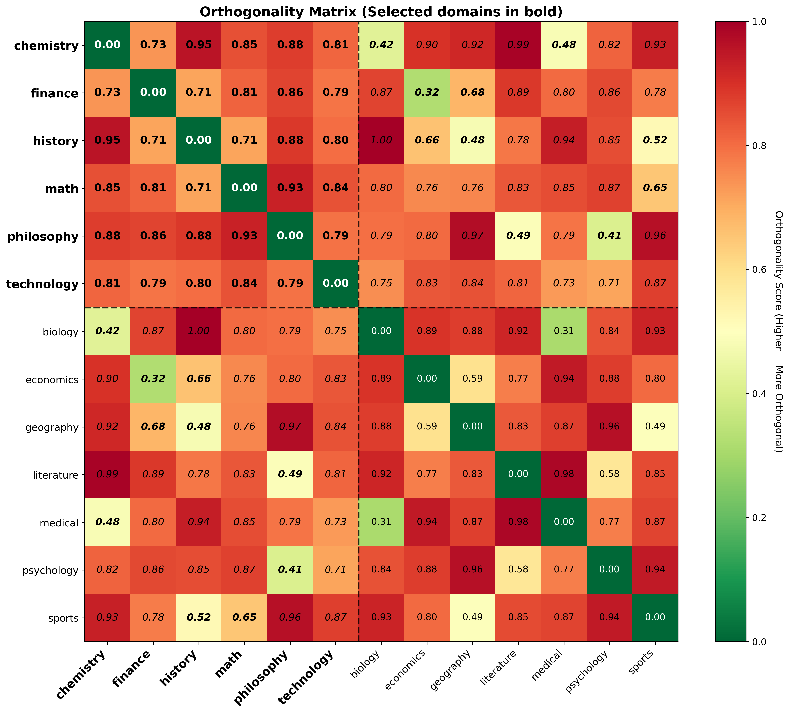
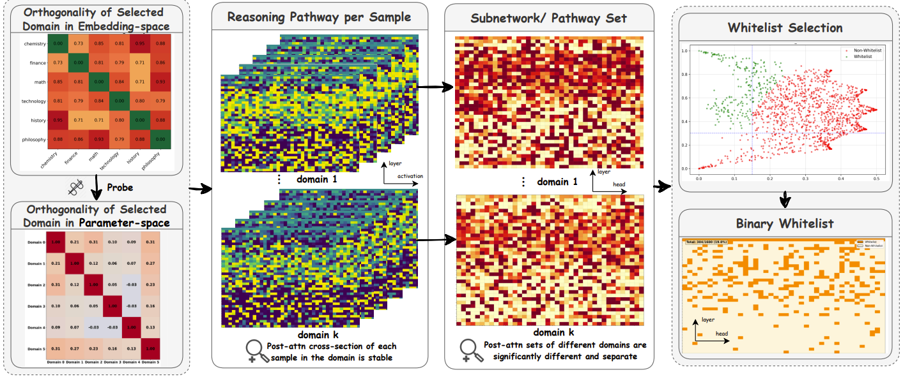
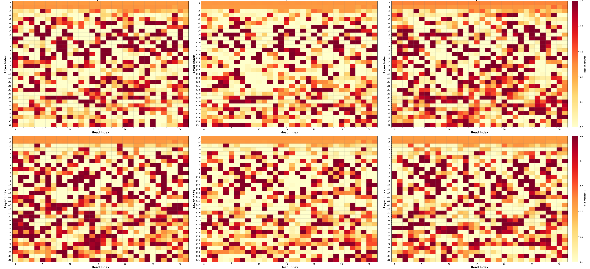
43.0 / 32.5 / 20.2 Recall (Selected/OOD/Cross)
Dense baseline: 29.6 / 26.1 / 18.4
34.7 / 30.4 / 22.9 Recall
Cross-domain remains above dense under heavier pruning.
47.8 / 44.1 / 31.3 Recall
Strong cross-dataset retention on NQ and ARC.
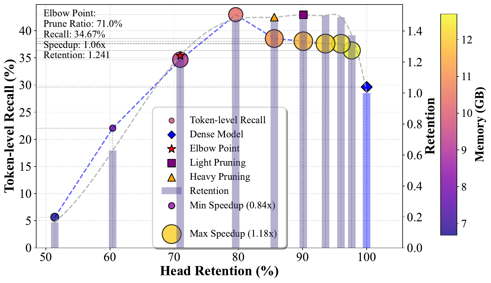
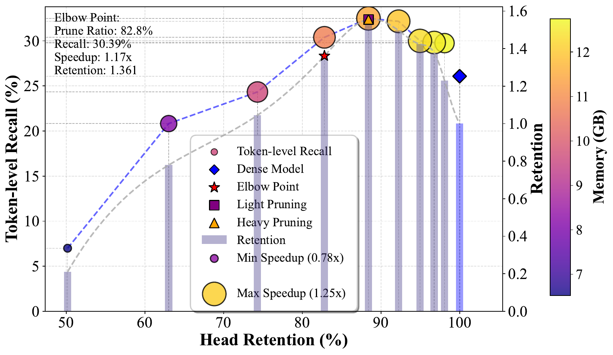
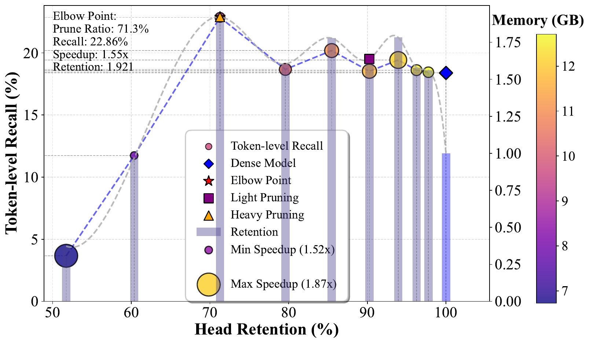
Gains are not only from removing heads. Scenario-conditioned masks suppress domain-conflicting pathways and preserve axis-coupled heads, reducing latent competition in residual aggregation.
This effect is strongest on distribution-shifted settings, where static global ranking methods are more brittle to scenario mismatch.
Hint: scroll horizontally to view all columns on smaller screens.
| Method | Moderate Pruning Recall | Aggressive Pruning Recall | ||||||||||
|---|---|---|---|---|---|---|---|---|---|---|---|---|
| Sel | OOD | Cross | CSQA | NQ | ARC | Sel | OOD | Cross | CSQA | NQ | ARC | |
| Dense | 29.6 | 26.1 | 18.4 | 22.27 | 30.25 | 23.87 | 29.6 | 26.1 | 18.4 | 22.27 | 30.25 | 23.87 |
| DaSS | 33.82 | 28.62 | 19.89 | 20.10 | 18.80 | 19.22 | 35.27 | 27.84 | 15.40 | 18.13 | 12.42 | 16.29 |
| Wanda | 26.87 | 27.26 | 15.43 | 17.63 | 17.27 | 14.38 | 18.12 | 26.57 | 8.77 | 13.70 | 8.09 | 9.50 |
| LLM-Pr. | 29.34 | 27.81 | 18.92 | 21.08 | 27.63 | 23.09 | 27.30 | 28.15 | 17.36 | 21.20 | 19.12 | 21.01 |
| RIA | 27.06 | 27.03 | 15.12 | 17.98 | 17.24 | 14.33 | 18.94 | 26.69 | 8.52 | 12.48 | 8.06 | 9.75 |
| Probe Pr. | 29.02 | 27.81 | 19.08 | 21.75 | 27.64 | 23.32 | 15.19 | 27.84 | 11.54 | 21.65 | 11.34 | 6.96 |
| Ours-SubspacePath | 43.00 | 32.50 | 20.20 | 19.43 | 33.66 | 22.91 | 34.70 | 30.40 | 22.90 | 18.40 | 24.89 | 21.56 |
Hint: scroll horizontally to view all columns on smaller screens.
| Backbone | XDB Selected (Dense/Ours) | XDB OOD (Dense/Ours) | XDB Cross (Dense/Ours) | NQ (Dense/Ours) | Speedup (Light/Agg.) |
|---|---|---|---|---|---|
| LLaMA-2-13B | 29.6 / 43.0 | 26.1 / 32.5 | 18.4 / 20.2 | 30.25 / 33.66 | 3.22 / 1.51 |
| Qwen2.5-7B | 40.8 / 46.4 | 33.6 / 41.0 | 22.9 / 27.2 | 17.51 / 19.51 | 2.01 / 0.88 |
| Qwen2.5-14B | 40.9 / 47.8 | 37.2 / 44.1 | 22.8 / 31.3 | 19.72 / 27.21 | 1.38 / 1.29 |
The consistent pattern is that moderate pruning gives the best overall robustness-efficiency point, while aggressive pruning still preserves competitive recall in OOD and cross-domain settings. This indicates SubspacePath primarily reorganizes executable pathways rather than relying on fragile one-shot compression.
| Ablation | XDB Sel. | XDB OOD | XDB Cross | CSQA | NQ | ARC |
|---|---|---|---|---|---|---|
| Dense | 29.6 | 26.1 | 18.4 | 22.27 | 30.25 | 23.87 |
| Full (DBS+PSP) | 34.7 | 30.4 | 22.9 | 19.43 | 33.66 | 25.62 |
| w/o DBS selection | 1.8 | 1.4 | 0.9 | 0.82 | 0.40 | 1.16 |
| w/o whitelist | 22.4 | 0.4 | 20.2 | 0.10 | 0.12 | 0.23 |
| w/o multi-domain mixing | 29.5 | 23.5 | 19.0 | 7.07 | 10.68 | 17.04 |
| Model | Pruning Time (s) | Speedup (Light / Aggressive) |
|---|---|---|
| LLaMA-3.1-8B + Ours | 0.039 | 1.41 / 1.35 |
| LLaMA-2-13B + Ours | 0.060 | 3.22 / 1.51 |
| Qwen2.5-7B + Ours | 0.027 | 2.01 / 0.88 |
| Qwen2.5-14B + Ours | 0.068 | 1.38 / 1.29 |
The strongest practical property is the offline/online separation: heavy computation is amortized offline, while online compilation stays sub-0.1s. This directly matches multi-turn deployment where one mask is reused through a scenario.
Reported speedups are backend-sensitive, so the paper separates raw speedup from retention. This is why some settings still emphasize retention gains even when wall-clock speedup is moderate.
The compiled mask reduces off-topic continuation and keeps retrieval-oriented reasoning concise, which improves relevance under dataset shift.
Subspace-conditioned pathways maintain multi-turn coherence: later responses stay aligned with earlier factual context instead of drifting into generic templates.
In mixed philosophy/sociology prompts, interference control is visible as cleaner reasoning transitions between concepts that would otherwise activate competing heads.
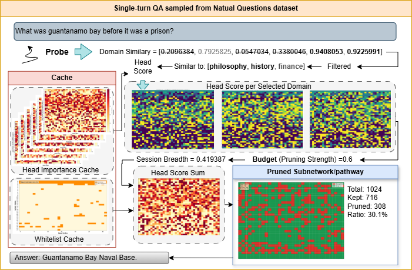
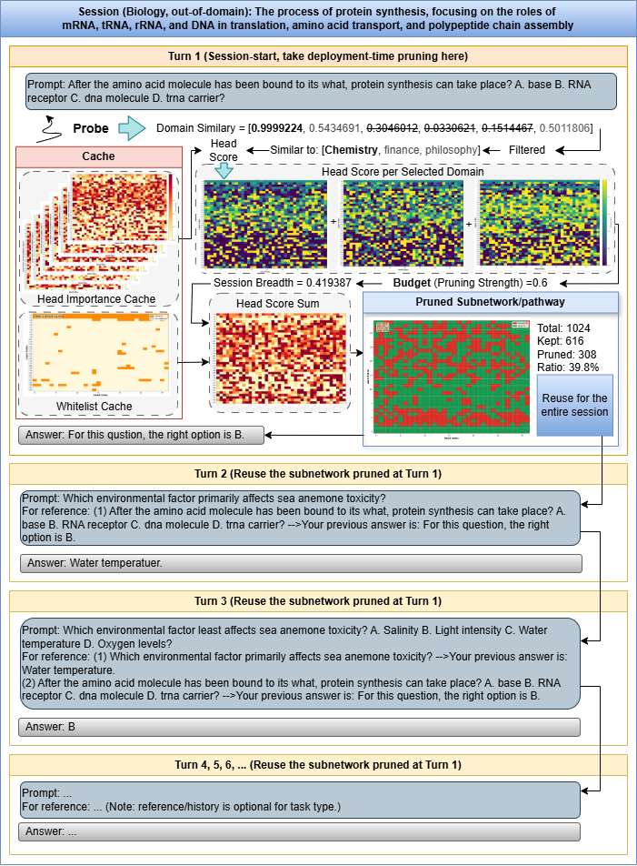
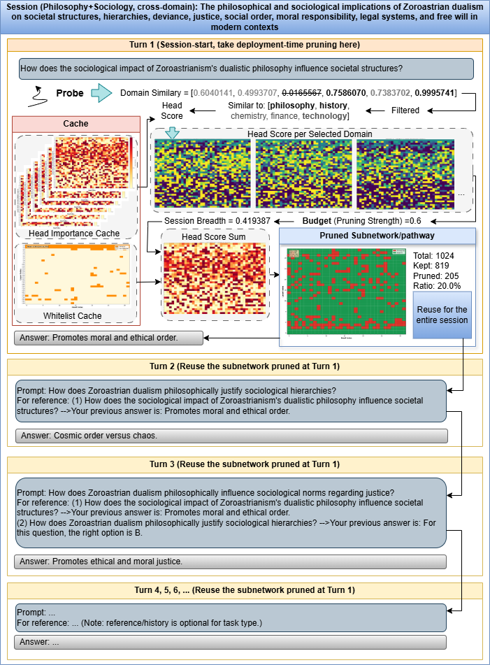
OpenReview page for the ICML 2026 publication.
Official implementation: GitHub repository.
A narrated, animated ~7-minute video tour — the problem, the DBS + PSP method, and the results, built from the paper's own figures.
@inproceedings{gong2026subspacepathpruner,
title = {SubspacePath Pruner: Inference-time Pruning via Probe-based Representation-Parameter Coupling},
author = {Gong, Zhiren and Hou, Yikun and Wu, Fan and Wang, Che and Zhang, Fuyao and Wu, Tiantong and Hao, Yurong and Zhang, Jiaming and Duan, Yiyang and Wang, Tiantong and Huang, Fei and Yuen, Chau and Lim, Wei Yang Bryan},
booktitle = {Forty-third International Conference on Machine Learning},
year = {2026}
}
For collaboration or questions about this project, contact zhiren001@e.ntu.edu.sg.